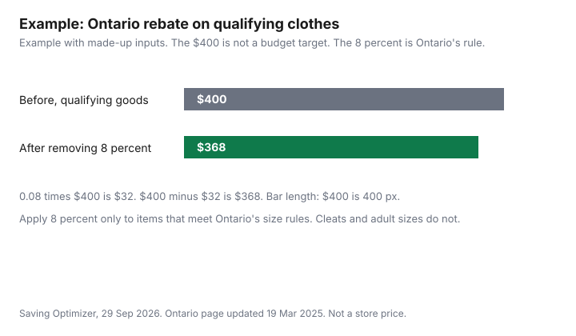

Clothing · Canada
Kids' Clothing on a Canadian Budget: What to Buy New, What to Buy Used and the Sales-Tax Rebates You Might Be Missing
Children outgrow clothes on a schedule the household budget does not share. The saving that is written down, for Ontario, is not a week-long tax holiday. It is a point-of-sale rebate of the 8 percent provincial portion of the HST on qualifying children's clothing and footwear. The rules below are from ontario.ca, updated 19 March 2025, checked 29 Sep 2026. Nova Scotia, Prince Edward Island, and British Columbia rates are not stated here. British Columbia's PST publications list includes a PDF titled Children's Clothing and Footwear. The provincial table says check your province. Winter coats and boots as a gear budget belong in a separate conversation. This page keeps them to one line and does not link a winter-gear guide. The back-to-school list is the September version of the same closet.
Disclosure: Discounted retailer gift cards and cash-back portal offers are offer types. Saving Optimizer may earn a commission if a partner link is added later. No partnership is claimed with any retailer or portal. A gift card or a portal does not change the tax on the receipt. Education only. This page does not name a best store or a best coat.
Key takeaways
- Ontario rebates the 8 percent provincial portion of the HST at the till on qualifying children's clothing and footwear. The page does not say the purchase is free of all tax. If the supplier does not give the rebate, ontario.ca points you to CRA form GST189.
- Clothing qualifies up to and including girls' Canada Standard Size 16 and boys' Canada Standard Size 20, or small, medium, or large when there is no Canada Standard Size. Footwear qualifies up to and including girls' size six and boys' size six, or small, medium, or large when there is no numerical size.
- Costumes, adult-sized garments bought for a child, and sports protective equipment are excluded. Skates, rollerblades, ski-boots, cleats, and adult-sized or injury-prevention footwear are excluded.
- Buy underwear, swimwear, and shoes with worn-out life left only as new. Outerwear and dress clothes can be used when the condition test in the thrift guide passes.
- Other provinces: check your province.
What families typically spend and where it leaks: growth spurts, shoes, sports
This section does not print an average, because a kids-only clothing average was not on the Statistics Canada page used for the household clothing budget. That Daily release is household clothing and accessories for all ages, not a per-child figure.
The leaks you can see without a survey are mechanical. A growth spurt retires a size while the clothes are still clean. Shoes wear out from the outside even when the shirt still fits. A sport that requires a specific shoe or a protective item is excluded from Ontario's children's footwear rebate when it is skates, cleats, or footwear designed to prevent injury, so the tax saving you expected may not be on that receipt. Winter outerwear is one line in the seasonal plan, not a second article. Put a number you choose in the worksheet, and do not treat a forum average as yours.
Food and the rest of the family envelope are the family grocery budget. A zero-based plan that gives clothing its own line is the zero-based budgeting guide. App store charges on a child's device are a different leak: kids' app subscriptions. Orthodontic bills are not clothing: kids' braces costs.
New vs used by category: underwear and shoes vs outerwear and dress clothes
Buy new when hygiene, safety, or remaining sole life is the point. Underwear, socks you cannot verify, swimwear, and intimates are new.
Shoes are new unless you can see tread, a stable heel, and an insole that has not collapsed, and even then a growing foot often makes used shoes a short experiment. The used household goods guide is the broader version of what not to buy used. Outerwear, denim, sweaters, and dress clothes can be used when zippers, seams, and smell pass the same inspection as in the Value Village guide. A costume is a poor place to hunt a tax rebate. Ontario excludes costumes from the children's clothing rebate even when the size looks like a child's.
Ontario's point-of-sale rebate on children's clothing and footwear, and how to check your province
Ontario's HST point-of-sale rebates page says the province provides a rebate of the 8 percent provincial portion of the HST for all Ontarians on listed items, including children's clothing and footwear. The Canada Revenue Agency administers the rebates.
If the supplier does not provide the rebate, you may claim it with form GST189, General Application for Rebate of GST/HST, on the CRA site. The same page also describes a separate First Nations point-of-sale rebate for status-card holders, bands, and band councils on qualifying off-reserve purchases. That is a different eligibility test. Do not mix the two. The children's rules below are the ones for the clothing rebate, updated 19 March 2025 on that page.
How to check your province: open your finance ministry's sales-tax page and search children's clothing. British Columbia's PST publications index, checked 29 Sep 2026, lists a PDF named Children's Clothing and Footwear. rate or size rule is stated here. Every other province is check your province. A cash-back portal or a discounted gift card, if you use one, applies to the price the store charges. It does not create a rebate the province did not publish. Confirm the receipt shows the provincial rebate before you count it.
Size limits: when bigger kids' sizes stop qualifying
Children's clothing, on the Ontario page: designed for babies, girls, and boys up to and including girls' Canada Standard Size 16 and boys' Canada Standard Size 20, including baby bibs, bunting blankets, and receiving blankets. If the clothing does not have a Canada Standard Size, it can still qualify when it is designated for girls and boys in small, medium, or large. Children's hosiery or stretchy socks, and hats, scarves, gloves, and mittens in sizes and styles designated for children, are included. Excluded: costumes, adult-sized garments even if acquired for a child, and garments and accessories designed to prevent bodily injury, such as sports protective equipment.
Children's footwear: designed for babies and for girls and boys up to and including girls' size six and boys' size six. Without a numerical size, footwear designated for girls or boys in small, medium, or large can qualify. Excluded: skates, rollerblades, ski-boots, footwear that has cleats or similar footwear, adult-sized footwear even if acquired for a child, and footwear designed to prevent bodily injury. The page does not print an insole length in centimetres, and it does not say extra-small through large. When a child moves into an adult size, or into a size past those cut-offs, the Ontario rebate described here stops for that item even if the shopper is still a child. Read the size on the tag, not the age on the birthday cake. Confirm with the receipt and, if the till did not rebate the provincial portion, with the CRA before you file GST189. Not tax advice.
Hand-me-downs, swaps and consignment loops
A hand-me-down has no new tax and no new price. Label the size and the season when you store it, and keep a bag of clothes that no longer fit so the next child, or the next family, gets them before they are forgotten.
Swaps work when everyone brings clothes that are clean and labelled. Consignment and resale shops that buy kids' clothes are local businesses with their own payout rules. Once Upon a Child's public homepage, checked 29 Sep 2026, describes buying and selling gently used kids' clothing, and the page checked said the country selected was the United States. If a Canadian store of that brand is near you, ask that store what it buys and what it pays. Selling online is the resale comparison. Do not assume a shop's payout from a U.S. marketing line.
A simple per-child, per-season budget worksheet
Write four seasons, not one August number. For each child, list what still fits, what must be new, and what can be used.
Then split the new dollars into items that should qualify for the Ontario rebate and items that will not, such as cleats or an adult size. Example with made-up inputs. One child, one year, $400 of qualifying clothing and footwear before the provincial portion. Eight percent of $400 is $32. The illustrative after-rebate goods total is $368. Those dollars are not a survey and not a store. They show the 8 percent arithmetic on a number you will replace. The federal portion of the HST is not restated here as a second rate. Your receipt is the check.
| Province | What the page says |
|---|---|
| Ontario | Point-of-sale rebate of the 8 percent provincial portion of the HST on qualifying children's clothing and footwear. Sizes in the next section of this guide. Exclusions include costumes, adult sizes, protective sports gear, skates, cleats, and ski-boots. If the supplier does not rebate it, form GST189. |
| British Columbia | Check your province. The PST publications index lists a PDF titled Children's Clothing and Footwear. |
| Nova Scotia | Check your province. |
| Prince Edward Island | Check your province. |
| Every other province and territory | Check your province. Do not copy Ontario's sizes or the 8 percent into another tax system. |
| Item | Default | Why |
|---|---|---|
| Underwear and swimwear | New | Hygiene and elastic. Not a useful used category. |
| Shoes for daily wear | New, unless tread and heel are obviously sound | Soles fail before the upper looks done. A growing foot shortens any used experiment. |
| Cleats, skates, ski-boots, protective gear | New, and check the tax line | Ontario excludes these from the children's footwear or clothing rebate described above. Safety gear is a poor used buy. |
| Outerwear | Used if the closure and seams pass | Coats outlast a size more often than shoes do. One winter line in the plan is enough on this page. |
| Dress clothes | Used if the event is rare | A size that is close beats a new outfit worn twice. Major alterations can erase the gap. |
| Play clothes and denim | Used or hand-me-down | They are outgrown. Stains you can live with are not the same as thin knees. |
| Line | Your child | Illustrative child |
|---|---|---|
| Qualifying clothes and shoes, your price before the provincial portion | $400 | |
| Ontario 8 percent provincial portion on that amount | $32 | |
| Illustrative amount after removing only that 8 percent | $368 | |
| Items that do not qualify (adult size, cleats, costumes) | Leave blank. Do not apply 8 percent. |

Sources & date stamps
- Ontario Ministry of Finance, HST: Ontario point-of-sale rebates, ontario.ca, updated 19 March 2025, checked 29 Sep 2026. Eight percent provincial portion. Children's clothing and footwear size rules and exclusions as quoted. GST189 if the supplier does not provide the rebate. First Nations rebate noted as a separate program.
- British Columbia, PST publications index, gov.bc.ca, checked 29 Sep 2026. A PDF titled Children's Clothing and Footwear is listed. No B.C. rate is stated.
- Once Upon a Child homepage, onceuponachild.com, checked 29 Sep 2026. The load said the country selected was the United States. Buy-and-sell description noted.
Frequently asked questions
Is children's clothing tax-free in Canada?
Ontario rebates the 8 percent provincial portion of the HST on qualifying children's clothing and footwear. That page does not say the purchase is free of every tax. If the supplier does not give the rebate, ontario.ca points you to CRA form GST189. Other provinces are not covered here, so check your province before you assume Ontario's rebate applies at your till.
What sizes count as children's clothing in Ontario?
The ontario.ca page, updated 19 March 2025, includes girls' Canada Standard Size up to and including 16 and boys' up to and including 20, plus small, medium, or large when there is no Canada Standard Size. Footwear goes up to and including girls' size six and boys' size six, or small, medium, or large when there is no numerical size. Costumes, adult sizes bought for a child, cleats, skates, ski-boots, and injury-prevention gear are excluded. The page does not state an insole length.
What should I always buy new for kids?
Underwear, swimwear, and shoes that do not have obvious life left in the sole. Protective sports gear, skates, and cleats are a poor used buy, and Ontario's rebate page excludes them from the children's clothing or footwear rebate. Outerwear and dress clothes can be used when the zipper, seams, and smell pass a close look. There is no price in that split.
Where can I sell outgrown kids' clothes?
Hand-me-downs and local swaps move clothes with no fee this page can quote. A resale shop is a local payout you should read at that shop. Once Upon a Child's homepage describes buying used kids' clothes, but the page checked had the United States selected, so confirm a Canadian location before you rely on it. Online fees, where a platform page loaded, are in the selling-clothes guide.
How much should I budget for kids' clothes per year?
Use the worksheet: what still fits, what must be new, and which of those new items qualify for your province's rebate. The illustrative row is $400 of qualifying goods and $32 of Ontario's 8 percent provincial portion. Those dollars are made up. Replace them with your receipts, and read the household clothing budget for the Statistics Canada household figure, which is not a per-child target.
Researched and drafted with AI assistance and fact-checked against official Canadian sources. How we create content.